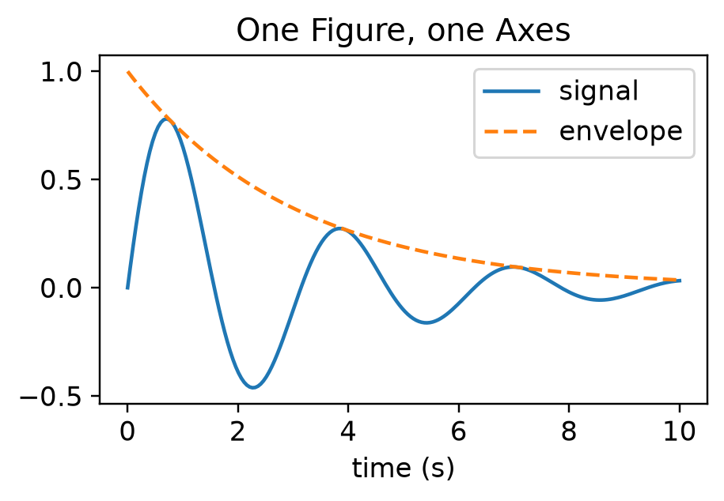

Day 2: pandas, plotting and scikit-learn
Introduction to Scientific Python
2026-10-06
Today
| Before the break | After the break |
|---|---|
| pandas (60 min) | seaborn (15 min) |
| Matplotlib (25 min) | scikit-learn (30 min) |
| Where to go next · wrap-up |
- Yesterday: arrays, and filtering them with SciPy
- Today: tables of the same recording, figures of them, then a first model
Yesterday in one slide
- Arrays: one dtype, a shape; index, slice and mask them
- Vectorise: aggregations along an
axis, broadcasting, no Python loops - SciPy:
sp.fftandsp.signalfiltered the mains hum out of the LFP - Psychometric curve: masks and broadcasting; today it takes one
groupbyline
pandas

What is pandas?
- Tables of data, built on NumPy
- DataFrame: a table of named columns sharing one row index
- Each column has its own dtype (numbers are NumPy arrays)
- Series: one column on its own, with the index
- Reads and writes CSV, Excel, Parquet, SQL, …
Reading a CSV file
| gdpPercap_1952 | gdpPercap_1957 | gdpPercap_1962 | gdpPercap_1967 | gdpPercap_1972 | gdpPercap_1977 | gdpPercap_1982 | gdpPercap_1987 | gdpPercap_1992 | gdpPercap_1997 | gdpPercap_2002 | gdpPercap_2007 | |
|---|---|---|---|---|---|---|---|---|---|---|---|---|
| country | ||||||||||||
| Albania | 1601.056136 | 1942.284244 | 2312.888958 | 2760.196931 | 3313.422188 | 3533.003910 | 3630.880722 | 3738.932735 | 2497.437901 | 3193.054604 | 4604.211737 | 5937.029526 |
| Austria | 6137.076492 | 8842.598030 | 10750.721110 | 12834.602400 | 16661.625600 | 19749.422300 | 21597.083620 | 23687.826070 | 27042.018680 | 29095.920660 | 32417.607690 | 36126.492700 |
| Belgium | 8343.105127 | 9714.960623 | 10991.206760 | 13149.041190 | 16672.143560 | 19117.974480 | 20979.845890 | 22525.563080 | 25575.570690 | 27561.196630 | 30485.883750 | 33692.605080 |
| Bosnia and Herzegovina | 973.533195 | 1353.989176 | 1709.683679 | 2172.352423 | 2860.169750 | 3528.481305 | 4126.613157 | 4314.114757 | 2546.781445 | 4766.355904 | 6018.975239 | 7446.298803 |
| Bulgaria | 2444.286648 | 3008.670727 | 4254.337839 | 5577.002800 | 6597.494398 | 7612.240438 | 8224.191647 | 8239.854824 | 6302.623438 | 5970.388760 | 7696.777725 | 10680.792820 |
index_col: the column that becomes the row labelspd.read_excel,data.to_csv(...)for other formats and for writing
Inspecting a DataFrame
data.head(): the first few rowsdata.info(): columns, dtypes, missing valuesdata.describe(): summary statistics per columndata.shape,data.columns,data.indexdata.T: rows and columns swapped
Live coding: gapminder
- Read the European GDP table
- Inspect it:
head,info,describe - Look at the index and the columns
- Get one column as a Series
Selecting with iloc and loc
| gdpPercap_1952 | gdpPercap_1957 | |
|---|---|---|
| country | ||
| Albania | 1601.0 | 1942.0 |
| Austria | 6137.0 | 8843.0 |
- End excluded, as in NumPy
data["gdpPercap_2007"]is the shortcut for one column:means “all rows” or “all columns”
Your turn
Open notebooks/day2_01_pandas.ipynb. The exercises follow the Software Carpentry gapminder lesson (Software Carpentry 2024), on the recording’s trials and units tables.
- Reading tabular data (10 min): read tables from the HDF5 file, inspect them, write and read back a CSV
- Selecting data (15 min): individual values, slices,
idxmin/idxmax, selection practice
Boolean masks
- The same idea as NumPy masks, but rows keep their labels
| gdpPercap_1952 | gdpPercap_2007 | |
|---|---|---|
| country | ||
| Ireland | 5210.0 | 40676.0 |
| Norway | 10095.0 | 49357.0 |
- Combine conditions with
&,|and~, with brackets around each comparison rich.sum()counts the matching rows;data[rich]keeps them
Group by: split, apply, combine
- Split rows into groups by the values in one column
- Apply a function to each group:
mean,count,idxmax, … - Combine the results into a table indexed by group
continent
Africa 54.8
Americas 73.6
Asia 70.7
Europe 77.6
Oceania 80.7
Name: lifeExp_2007, dtype: float64Beyond today: missing data and merge/join are stretch material in the notebook (PDSH chapter 3).
Live coding: masks and group by
- Select countries by a condition on one column
- Add a new column computed from others
- Group by continent and summarise
- Several summaries at once with
.agg
Your turn
Open notebooks/day2_01_pandas.ipynb
- Boolean masks (5 min): the end of section 2, on the units, combining text and number conditions
- Group by (10 min): yesterday’s psychometric curve in one line, checked against your NumPy version
Stretch: one grouping question of your own
Tidy (“long”) data
| continent | country | gdpPercap_1952 | gdpPercap_1957 | gdpPercap_1962 | |
|---|---|---|---|---|---|
| 0 | Africa | Algeria | 2449.0 | 3014.0 | 2551.0 |
| 1 | Africa | Angola | 3521.0 | 3828.0 | 4269.0 |
| 2 | Africa | Benin | 1063.0 | 960.0 | 949.0 |
- One column per measurement and year
- seaborn, after the break, wants long tables
Your turn
Open notebooks/day2_01_pandas.ipynb, Part 4: tidy data
- Melt the psychometric curve, one column per block, into a long table
- Melt the firing rates, one column per time bin, into one row per unit and bin
8 minutes. Stretch: Many Ways of Access; merging units with electrodes (PDSH)
Matplotlib
Figures, axes and artists

- Figure: the whole canvas, saved to a file
- Axes: one plot area; a figure can hold many
- Artists: everything drawn (lines, text, ticks), each with properties you can change
pyplot versus fig, ax
- You used
fig, axyesterday; we use it throughout: it scales to many panels and works inside functions - Most
plt.xlabel(...)calls becomeax.set_xlabel(...) - Code from an LLM or the web often mixes the two: settle on one before you change it
Matplotlib docs, the two interfaces.
Saving figures
- The extension picks the format
bbox_inches="tight"trims the white border
Plots from an LLM
- Fine for a first draft: you rarely need to remember
ax.spines[...]orannotatearguments - Ask well: the shape and dtype of your arrays or the columns of your DataFrame, units, the message of the plot; ask for
fig, axcode - Read before you run: which data goes on which axis, and which
axeach line changes - Check what you see:
- Axis labels with units; limits that do not hide data
- Colormap: sequential for magnitudes, diverging only for data centred on zero
- Images:
origin,aspectandextent - Legend entries that match the lines
- The figure carries your name, not the LLM’s
Live coding: a first figure
- Plot a damped oscillation with the defaults
- Improve it: size, colours, labels, legend; save it as PNG and PDF
- The same plot in
pyplotstyle, then translate it back tofig, ax
Your turn
Open notebooks/day2_02_matplotlib.ipynb, Part 1: simple plot
- Build a figure of two LFP traces step by step, from the recording (International Brain Laboratory et al. 2026)
- Colours and a legend, ticks at the stimuli, then save it
8 minutes. Optional: limits, spines and an annotation
More plot types
| Method | For |
|---|---|
ax.scatter(x, y, s=..., c=...) |
Points, with size and colour per point |
ax.hist(values, bins=...) |
Distributions |
ax.bar(names, heights) |
Values per category |
ax.errorbar(x, y, yerr=...) |
Means with error bars |
ax.imshow(array) |
Images and 2-D arrays |
- Several panels:
fig, axes = plt.subplots(1, 3), thenaxes[0].plot(...)
Images and colormaps

- A 2-D grey image has no colour:
imshowmaps values through a colormap - Perceptually uniform maps (
viridis,gray); diverging maps (RdBu_r) only for data centred on zero fig.colorbar(im, ax=ax)shows the mapping
Your turn
Open notebooks/day2_02_matplotlib.ipynb, Part 2: the whole recording as an image (after SPL Ex. 31)
- A first attempt shows the LFP badly: fix its aspect, origin, axis units and colormap
8 minutes. Stretch: a scatter of the units along the probe, spike counts as an image, the population response, subplot_mosaic layouts, the LFP’s envelope, more plot types
Break
10 minutes
seaborn
Statistical plots from DataFrames
When to reach for seaborn
- seaborn: a tidy DataFrame; colour, size or panels by category; means with confidence intervals; distributions
- Plain Matplotlib: arrays and images, custom layouts, unusual plot types
- seaborn draws with Matplotlib:
ax=,fig.savefigand the last block still apply
Live coding: the seaborn tour
- Back to the recording:
trials,units, andrates_longfrom the pandas block relplot,lineplotwith confidence bands, distributions, one panel per brain area
Your turn
Open notebooks/day2_03_seaborn.ipynb, Your turn
- The psychometric curve straight from
trials, one line per block, with confidence intervals: nogroupbyneeded
5 minutes. Stretch: one plot of your own, answering a question about the trials or units. The seaborn gallery is the fastest way to find a plot type.
scikit-learn
What is scikit-learn?
- Machine learning in Python, built on NumPy and SciPy
- Supervised: learn to predict
yfromX(classification, regression) - Unsupervised: find structure in
Xalone (clustering, dimensionality reduction) - Every model has the same interface: learn it once
X and y
X: a table, one row per sample, one column per feature- A DataFrame or a 2-D NumPy array
- Here: one row per trial;
trials[["contrast", "probability_left"]]
y: a 1-D array, one answer per sample- Here: did the mouse choose right?
Xmust be 2-D even with one feature:trials[["contrast"]], nottrials["contrast"]
The estimator pattern
array([False, True])- Make the model, with its settings
fit(X, y)learns from the datapredict(X)for new samplespredict_proba(X): one column per class, in the order ofmodel.classes_- Learned values end in
_:model.coef_
Train and test
- A model scored on the data it learned from looks better than it is
- Hold some samples back: fit on the training set, score on the test set
- Compare with a baseline, such as always guessing the most common answer
- Cross-validation repeats the split several ways:
cross_val_score
Live coding: hours of study
- The pass/fail data from the slide: split, fit, score
- Compare with the baseline
coef_, thenpredict_probaon a grid, plotted over the data
Your turn
Open notebooks/day2_04_sklearn.ipynb
- Fit a model (10 min): predict the mouse’s choice from contrast and block; score it on held-out trials against a baseline
- Look inside (10 min): what do the coefficients mean? Plot the model’s curves over the psychometric curve from the pandas block
Stretch: a better feature, whether the block helps (cross-validation), decoding the choice from the neurons
Where to go next
scikit-image: images are arrays
import skimage as ski
image = ski.io.imread("nuclei.tif") # a NumPy array
smooth = ski.filters.gaussian(image, sigma=2)
mask = smooth > ski.filters.threshold_otsu(smooth) # a boolean mask
labels = ski.measure.label(mask) # 0 = background, 1..N = objects
table = ski.measure.regionprops_table(labels, properties=["area", "eccentricity"])- Use it when: you filter, threshold, segment or measure microscopy (or any) images
- Measurements come out as a table, ready for pandas and seaborn
xarray: labelled N-D arrays
- Use it when: you keep forgetting which axis is time, or carry coordinates (seconds, µm, brain areas) alongside your arrays
- Reads and writes NetCDF and Zarr; pandas-style
groupbyon N-D data
dask: bigger than memory, in parallel
- Use it when: your data do not fit in memory, or one core is too slow
- NumPy- and pandas-like interfaces; xarray uses it under the hood
napari: look at your data
- Use it when: you need to browse, check or annotate N-D images: z-stacks, time-lapses, many channels
- Opens a desktop window: install it on your own machine
Also worth knowing
| Package | What it is for |
|---|---|
| statsmodels | Regression models and statistical tests with full summary tables |
| pingouin | Common statistical tests on DataFrames, with effect sizes |
| Zarr | Chunked, compressed N-D arrays on disk or in the cloud |
| Polars | Fast DataFrames with a lazy query engine |
| Numba | Compiles the Python loops you cannot avoid to machine code with @numba.njit |
Wrap-up
- Tables:
locversusiloc, masks,groupby, and tidy (long) data - Plot with
fig, ax = plt.subplots(); seaborn for tidy DataFrames - scikit-learn:
Xis samples × features;fit, then score on held-out data against a baseline - Check the ecosystem before writing an algorithm yourself: SciPy, scikit-image, xarray, dask, napari
Keep going: the Scientific Python Development Guide, the advanced chapters of Scientific Python Lectures (Varoquaux et al. 2024), and the BioImage Analysis Notebooks.
Exercises adapted from Scientific Python Lectures (Varoquaux et al. 2024) (CC BY 4.0) and the Software Carpentry gapminder lesson (Software Carpentry 2024) (CC BY 4.0). Further reading in the Python Data Science Handbook (VanderPlas 2016).